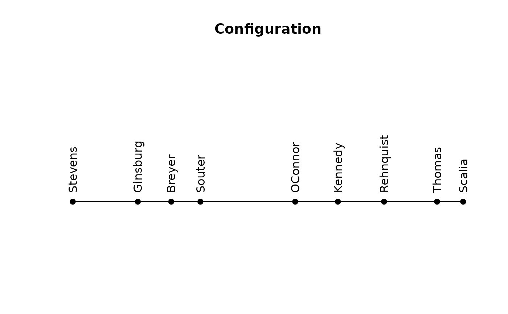
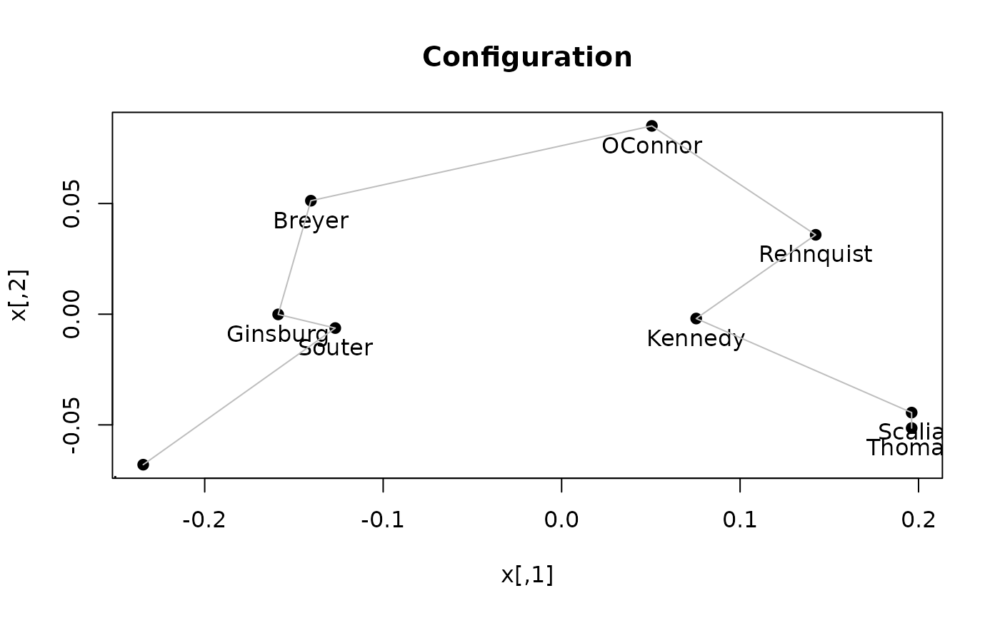
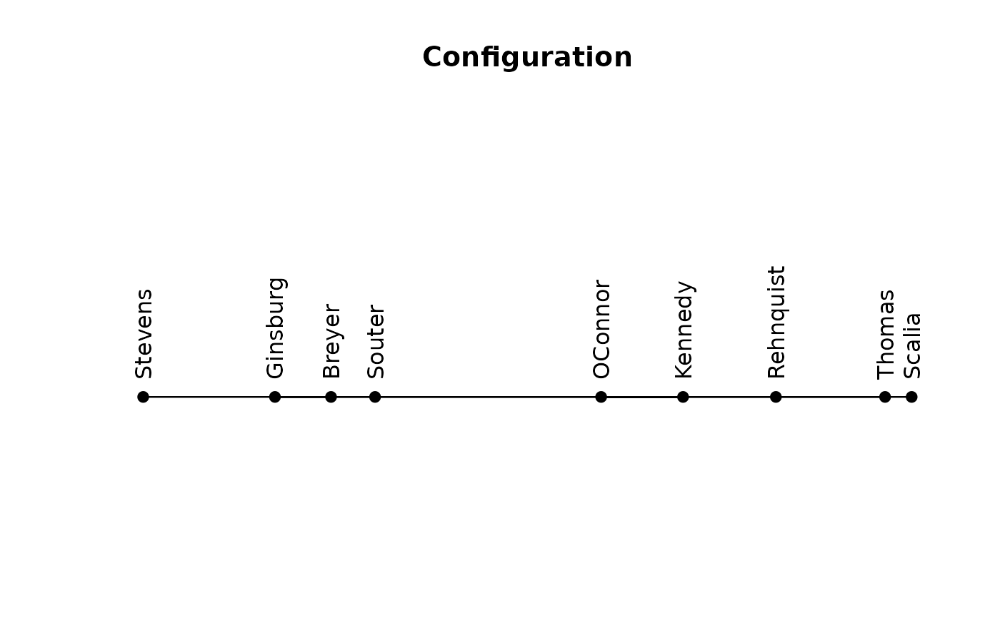

Fits an (approximate) unidimensional scaling configuration given an order.
Usage
uniscale(d, order, accept_reorder = FALSE, warn = TRUE, ...)
MDS_stress(d, order, refit = TRUE, warn = FALSE)
get_config(x, dim = 1L, ...)
plot_config(x, main, pch = 19, labels = TRUE, pos = 1, cex = 1, ...)Arguments
- d
a dissimilarity matrix.
- order
a precomputed permutation (configuration) order.
- accept_reorder
logical; accept a configuration that does not preserve the requested order. If
FALSE, the initial configuration stored inorderor, an equally spaced configuration is returned.- warn
logical; produce a warning if the 1D MDS fit does not preserve the given order.
- ...
additional arguments are passed on to the seriation method.
- refit
logical; forces to refit a minimum-stress MDS configuration, even if
ordercontains a configuration.- x
a scaling returned by
uniscale()or aser_permutationwith a configuration attribute.- dim
The dimension if
xis aser_permutationobject.- main
main plot label
- pch
print character
- labels
add the object names to the plot
- pos
label position for 2D plot (see
text()).- cex
label expansion factor.
Details
This implementation uses the method describes in Maier and De Leeuw (2015) to calculate the
minimum stress configuration for a given (seriation) order by performing a 1D MDS fit.
If the 1D MDS fit does not preserve the given order perfectly, then a warning is
produced indicating
for how many positions order could not be preserved.
The seriation method which is consistent to uniscale is "MDS_smacof"
which needs to be registered with register_smacof().
The code is similar to smacof::uniscale() (de Leeuw, 2090),
but scales to larger
datasets since it only uses the permutation given by order.
MDS_stress() calculates the normalized stress of a configuration given by a seriation order.
If the order does not contain a configuration, then a minimum-stress configuration if calculates
for the given order.
All distances are first normalized to an average distance of close to 1 using \(d_{ij} \frac{\sqrt{n(n-1)/2}}{\sqrt{\sum_{i<j}{d_{ij}}^2}}\).
Some seriation methods produce a MDS configuration (a 1D or 2D embedding). get_config()
retrieved the configuration attribute from the ser_permutation_vector. NULL
is returned if the seriation did not produce a configuration.
plot_config() plots 1D and 2D configurations. ... is passed on
to plot.default and accepts col, labels, etc.
References
Mair P., De Leeuw J. (2015). Unidimensional scaling. In Wiley StatsRef: Statistics Reference Online, Wiley, New York. doi:10.1002/9781118445112.stat06462.pub2
Jan de Leeuw, Patrick Mair (2009). Multidimensional Scaling Using Majorization: SMACOF in R. Journal of Statistical Software, 31(3), 1-30. doi:10.18637/jss.v031.i03
Author
Michael Hahsler with code from Patrick Mair (from smacof::uniscale()).
Examples
data(SupremeCourt)
d <- as.dist(SupremeCourt)
d
#> Breyer Ginsburg Kennedy OConnor Rehnquist Scalia Souter Stevens
#> Ginsburg 0.11966
#> Kennedy 0.25000 0.26709
#> OConnor 0.20940 0.25214 0.15598
#> Rehnquist 0.29915 0.30769 0.12179 0.16239
#> Scalia 0.35256 0.36966 0.18803 0.20726 0.14316
#> Souter 0.11752 0.09615 0.24790 0.22009 0.29274 0.33761
#> Stevens 0.16239 0.14530 0.32692 0.32906 0.40171 0.43803 0.16880
#> Thomas 0.35897 0.36752 0.17735 0.20513 0.13675 0.06624 0.33120 0.43590
# embedding-based methods return "configuration" attribute
# plot_config visualizes the configuration
o <- seriate(d, method = "sammon")
get_order(o)
#> Stevens Ginsburg Breyer Souter OConnor Kennedy Rehnquist Thomas
#> 8 2 1 7 4 3 5 9
#> Scalia
#> 6
plot_config(o)

# the configuration (Note: objects are in the original order in d)
get_config(o)
#> Breyer Ginsburg Kennedy OConnor Rehnquist Scalia
#> -0.14684990 -0.19296373 0.08295749 0.02409039 0.14664491 0.25573152
#> Souter Stevens Thomas
#> -0.10664196 -0.28273598 0.21976725
# angle methods return a 2D configuration
o <- seriate(d, method = "MDS_angle")
get_order(o)
#> Stevens Souter Ginsburg Breyer OConnor Rehnquist Kennedy Scalia
#> 8 7 2 1 4 5 3 6
#> Thomas
#> 9
get_config(o)
#> [,1] [,2]
#> Breyer -0.14049676 5.127010e-02
#> Ginsburg -0.15882157 -9.597189e-05
#> Kennedy 0.07540714 -1.955142e-03
#> OConnor 0.05058155 8.506621e-02
#> Rehnquist 0.14235840 3.586661e-02
#> Scalia 0.19613081 -4.444093e-02
#> Souter -0.12683772 -6.267484e-03
#> Stevens -0.23446211 -6.798782e-02
#> Thomas 0.19614026 -5.145556e-02
plot_config(o, )

# calculate a configuration for a seriation method that does not
# create a configuration
o <- seriate(d, method = "ARSA")
get_order(o)
#> Stevens Ginsburg Breyer Souter OConnor Kennedy Rehnquist Thomas
#> 8 2 1 7 4 3 5 9
#> Scalia
#> 6
get_config(o)
#> NULL
# find the minimum-stress configuration for the ARSA order
sc <- uniscale(d, o)
sc
#> Breyer Ginsburg Kennedy OConnor Rehnquist Scalia Souter
#> -0.5502170 -0.6888976 0.3206014 0.1179750 0.5502213 0.8861084 -0.4412820
#> Stevens Thomas
#> -1.0148850 0.8203757
plot_config(sc)
